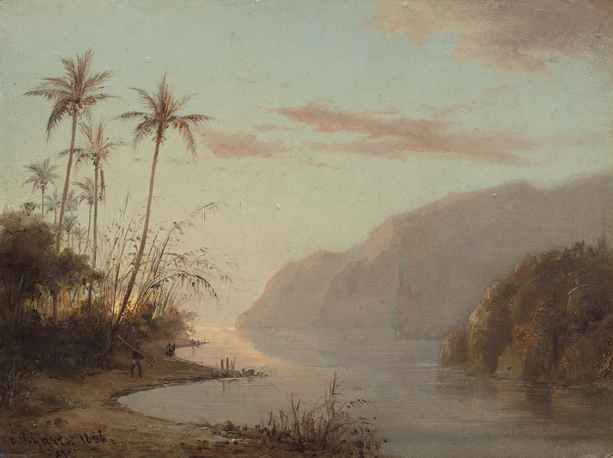

Жакоб Абраам Камиль Писсарро
Une Crique a Saint-Thomas (Antilles) (Бухта на острове Сент-Томас (Антильские острова)), 1856

Академическая доска, масло, 24,5 x 32,2 см
Национальная галерея искусства, Вашингтон.
Данная изысканная картина, залитая мягкими золотистыми оттенками заходящего солнца, выполненная в завораживающих лазурных оттенках, переносит зрителей в спокойное уединённое место на берегу реки. Высокие пальмы с тонкими стволами и перистыми листьями изящно подчёркивают пейзаж, отбрасывая пятнистые тени на кромку воды. Высокое небо имеет оттенки розового и фиолетового, далекие горы, окутанные легким туманом, создают безмятежный фон для одинокой фигуры, которая остановилась в задумчивости у мерцающей реки. Импрессионистский стиль проявляется в маленьких, тонких мазках пальмовых веток и окружающей листвы. Проглядывающее сквозь них вечернее солнце, бросающее жёлто-оранжевый свет на полотно, подчёркивает красоту природы. Нежная манера письма и неземная палитра создают мечтательную атмосферу, позволяя зрителю на мгновение отвлечься от мирской суеты и погрузиться в этот райский оазис.
Происхождение
Антуан Мельби Племянник мадам Мельби, Эммануэль Пишон, Ле Пек, Франция, с 1936 по 1939 гг. Мадам Жюль Жуэтс, с 1956 г. Продана в 1959 г. (Wildenstein & Co., Лондон, Нью-Йорк и Париж) Продана в 1960 г. г-ну Полу Меллону, Аппервиль Подарена в 1985 г. Национальной галерее
Источник: https://www.nga.gov/artworks/66427-creek-st-thomas-virgin-islands